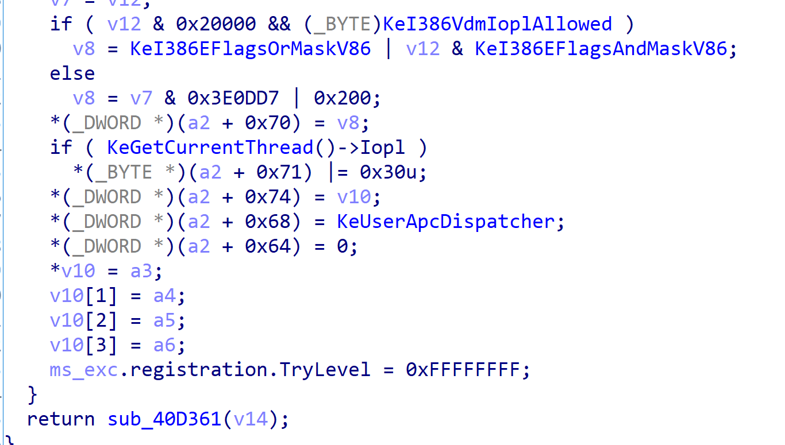

APC
Asyncroneus Procedure Call
什么是APC
Asyncroneus Procedure Call也就是异步过程调用
windbg查看一波，位于kthread+0x34处
上图是apc状态结构体成员
第一个是个双向链表，分为俩个队列，用户态和内核态，所以APC注入也分三环零环
process是线程所属或挂靠的进程
下面三都是标志位，第一个表示是否有内核apc函数在运行
然后是表示是否有内核apc和是否有用户apc正在等待中
再来看一下备用APC队列
这个主要是在进程挂靠时起作用，保存原始进程的apc队列
当进程恢复时再根据备用apc队列恢复原始apc队列
这边是ApcStatePointer
为了操作方便，_KTHREAD结构体中定义了一个指针数组ApcStatePointer ，长度为2。
正常情况下：
ApcStatePointer[0] 指向 ApcState
ApcStatePointer[1] 指向 SavedApcState
挂靠情况下：
ApcStatePointer[0] 指向 SavedApcState
ApcStatePointer[1] 指向 ApcState
+0x165 ApcStateIndex用来表示apc状态
0 正常状态 1 挂靠状态
结合一下ApcStatePointer可以发现ApcStatePointer[ApcStateIndex]永远表示当前apc队列
紧接着他的是ApcQueueable，这用来表示是否能向当前线程插入apc，当线程正在执行退出的代码时，会将这个值设置为0 ，如果此时执行
插入APC的代码(KeInsertQueueApc),在插入函数中会判断这个值的状态，如果为0，则插入失败。
之所以叫apc呢主要是因为当apc执行，一般都是俩个线程A,B
B线程向A线程中插入APC然后等A线程执行时再执行APC，所以叫异步过程调用
具体见下
APC挂入
这边来介绍下APC的挂入过程
ring3
1 | |
1 | |
一般情况下都选择直接使用QueueUserApc来挂入APC，当然也能用_NtQueueApcThread@20,后者可以不使用IntCallUserApc、换成自己的函数，函数参数也可以有三个了，而PARCFUNC只有一个参数，整体区别不大
ring0
见流程图，首先从KeInitializeApc开始，该函数主要是填充KAPC结构体
KiInsertQueueApc根据KAPC结构中的ApcStateIndex找到对应的APC队列，再根据KAPC结构中的ApcMode确定是用户队列还是内核队列，将KAPC挂到对应的队列中(挂到KAPC的ApcListEntry处)，再根据KAPC结构中的Inserted置1，标识当前的KAPC为已插入状态，修改KAPC_STATE结构中的KernelApcPending/UserApcPending
内核APC执行
既然已经知道APC挂入流程了，现在来康康APC执行
系统调用、中断、异常处理时系统都会查看APC队列是否有需要执行的APC，因为每当发生时都会执行KiServiceExit
下面来逆一波KiServiceExit
检查是否有用户apc，有则处理
再看看KiDeliverApc
这边有个判断内核APC是否为空，不空则跳转
然后判断函数地址是否为空，并往栈中填充参数
下面就是负责执行内核apc并删除队列恢复状态然后再次循环
流程如上，这边注意下ApcState.UserApcPending必须为真，这边就是说明只有可唤醒得线程才会投递APC
用户APC执行
用户APC相对内核来说就复杂多了，因为涉及到许多堆栈切换操作
首先得从内核态到用户态，再到内核态
而且到用户态不能回到当初进入内核态处，得回到对应apc函数入口
具体用户态APC如上，首先判断条件，第一个参数是否为1，是否有用户态apc再执行，用户态apc队列是否为空
满足条件后讲ApcState.UserApcPending置0然后开始处理，删除队列，释放KAPC结构体内存
然后开始KiInitializeUserApc
用户空间堆栈完事后开始各种初始化
填充寄存器

最后让eip指向KeUserApcDispatcher
apc处理完后执行_ZwContinue@8返回内核恢复trapframe继续上面得循环判断处理，如没有则恢复trapframe然后回三环原来进0环的地方
以后会写APC注入，用户态和内核态的
用户态的很简单其实，用上面发的代码改一改，注自己线程换成注别的，拿进程pid然后拿线程句柄后写内存然后照搬套路。
内核态有空写下。